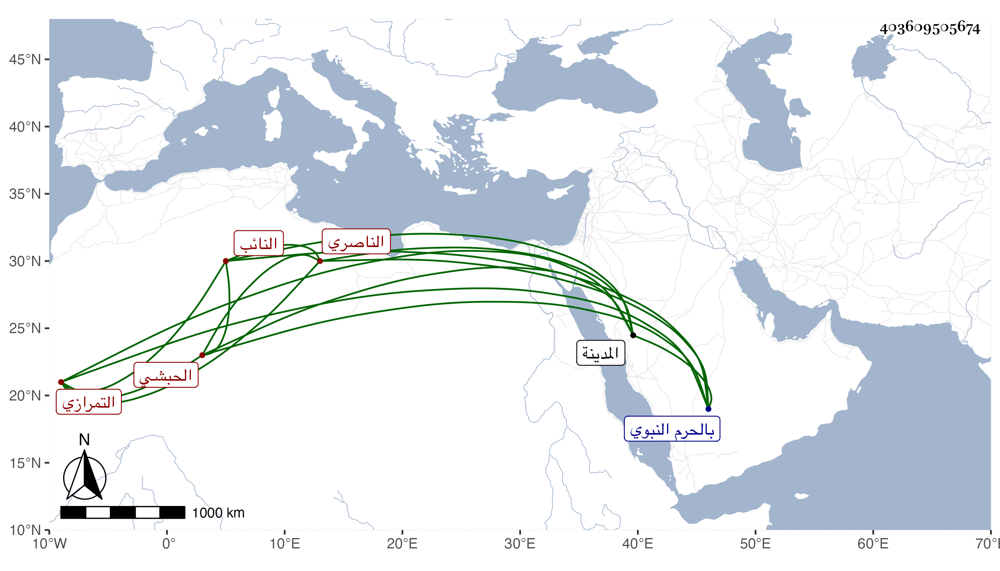

0902Sakhawi.DawLamic.ITO20230111-ara1.EIS1600.403609505674
Biography ID: 403609505674
320
جوهر التمرازي تمراز الناصري النائب الحبشي . خدم بعده المؤيد شيخ وصار من الجمدارية الكبار ثم بعد دهر ولاه الظاهر جقمق الخازندارية بعد موت جوهر القنقباي فحسنت مباشرته ولم يلبث أن عزل بفيروز النوروزي الرومي بل وصودر وسجن ثم أطلق وأقام بطالا إلى أن ولي مشيخة الخدام بالحرم النبوي بعد موت فيروز الركني ، وتوجه إلى المدينة في سنة تسع وأربعين فأقام بها حتى مات في أواخر التي بعدها بعد أن تمرض أياما وهو في الخمسين تقريبا ، واستقر بعده في المشيخة فارس كبير الطواشية هناك وكان مليح الشكل كريما ذا حشمة وتواضع وذوق ، محبا في النادرة والنكتة سريع الفهم لها عفا الله عنه . ذكره العيني باختصار .
